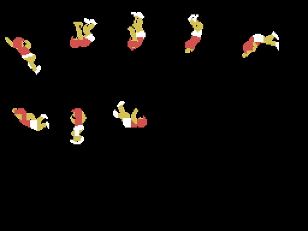

Lo que no se sabe va aquí, no se disimula.
La figura [5] de la tabla de 0x6E33 tiene una pieza con dy = 114 y color 0, o sea invisible y fuera de la pantalla, con el mismo patrón que la pieza siguiente. Falta ver si es un descarte que quedó ahí o si el motor la usa para algo que no se ha visto.

0x4010 hace ld hl,0c9e1h / ld (0412fh),hl, y 0x412F es ROM: la escritura no llega a ninguna parte. Los 0xC9E1 son pop hl / ret, o sea que ahí hubo una automodificación cuando ese trozo de código vivía en RAM. Falta confirmarlo.
Entre las figuras y los guiones relativos hay una rutina completa —divide HL entre 32 sin perder por arriba— a la que no apunta ninguna instrucción del cartucho. Lo que hace es exactamente lo que el reparto de la dirección de la piedra del curling hace a mano, unas líneas más abajo. Lo que no se sabe es si se dejó de usar a propósito o si es un resto de una versión anterior.
De las cinco pantallas, el logotipo es la única que no tiene todavía su volcado del emulador cuadrado: hay que buscarle el instante bueno, como se hizo con el título, donde el primer volcado que se daba por bueno resultó ser el logotipo con otro nombre. Las otras cuatro están cotejadas.
El triple salto y la pértiga dibujan al atleta con la postura de salida, que es la que dicen los cuatro bytes de 0x6DE6. El emulador nunca captura esa postura quieta: cuando el volcado la tiene dibujada, el atleta ya está corriendo. La pértiga se ha podido cotejar contra el primer fotograma en que aparece —seis sprites idénticos, cero bytes de patrón distintos— porque la fila y la columna no habían cambiado todavía. El triple salto no: ahí el atleta ya se ha movido, y su postura de salida se queda sin cotejar contra la máquina, solo derivada del listado.